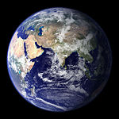

Я очень давно решил стать программистом. Мне очень интересно создавать разные приложения для людей.
- |
Земля́ — третья от Солнца планета. Пятая по размеру среди всех планет Солнечной системы. Она является также крупнейшей по диаметру, массе и плотности среди планет земной группы.
Иногда упоминается как Мир, Голубая планета[17][18][19], иногда Терра (от лат. Terra). Единственное известное человеку на данный момент тело Солнечной системы в частности и Вселенной вообще, населённое живыми организмами.
Научные данные указывают на то, что Земля образовалась из солнечной туманности около 4,54 миллиарда лет назад[20] и вскоре после этого приобрела свой единственный естественный спутник — Луну. Предположительно жизнь появилась на Земле примерно 4,25 млрд лет назад[21], то есть вскоре после её возникновения. С тех пор биосфера Земли значительно изменила атмосферу и прочие абиотические факторы, обусловив количественный рост аэробных организмов, а также формирование озонового слоя, который вместе с магнитным полем Земли ослабляет вредную для жизни солнечную радиацию[22], тем самым сохраняя условия существования жизни на Земле. Радиация, обусловленная самой земной корой, со времён её образования значительно снизилась благодаря постепенному распаду радионуклидов в ней. Кора Земли разделена на несколько сегментов, или тектонических плит, которые движутся по поверхности со скоростями порядка нескольких сантиметров в год. Изучением состава, строения и закономерностей развития Земли занимается наука геология.
| Some continents and area | |
| Африка | 30 300 тис. км |
| Євразія | 53 450 тис. км |
| Північна Америка | 24 250 тис. км |
| Південна Америка | 18 280 тис. км |
| Антарктида | 13 970 тис. км |
| Австралія | 7 687 тис. км |